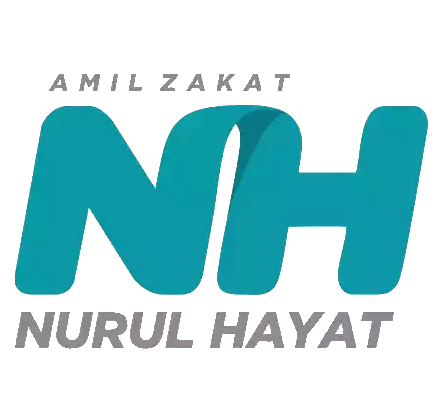

Presented By:

Bekerjasama dengan:
Apa itu Nurul Hayat?
FLAME adalah event Olimpiade MIPA tingkat SMP/MTs sederajat serta SMA/SMK/MA/MAK sederajat yang diselenggarakan oleh klub belajar Online EDU GO Indonesia
Penyelenggaraan di tahun 2019 adalah penyelenggaraan untuk pertama kalinya dengan tema:
dengan keenam bidang tersebut memperebutkan:
Hal yang menjadi perhatian penyelenggara untuk melaksanakan event ini adalah upaya meringankan beban saudara-saudara yang ada di Palestina, dengan asumsi bahwa semakin banyak partisipan dalam event ini maka semakin banyak donasi yang terkumpul untuk Palestina.
Kami ucapkan terimakasih kepada seluruh pihak yang telah membantu berjalannya event ini.
Contact Person: